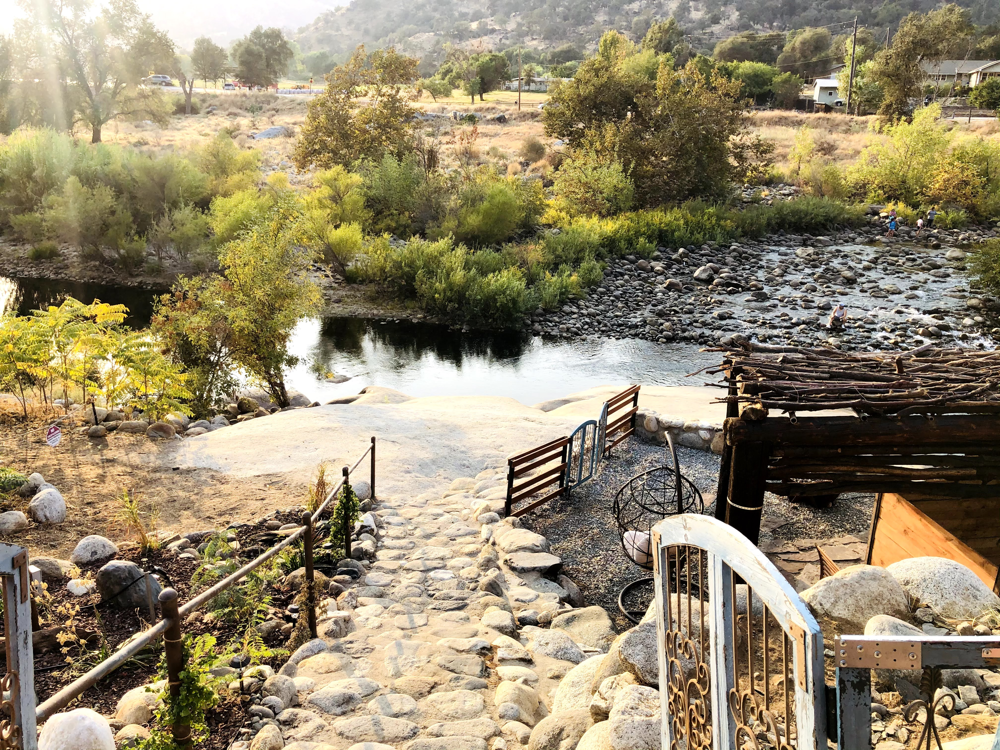
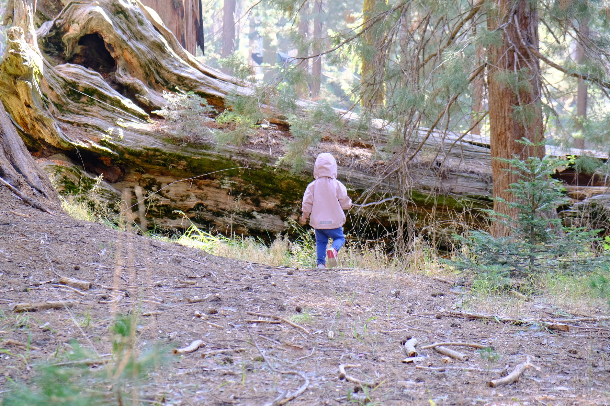
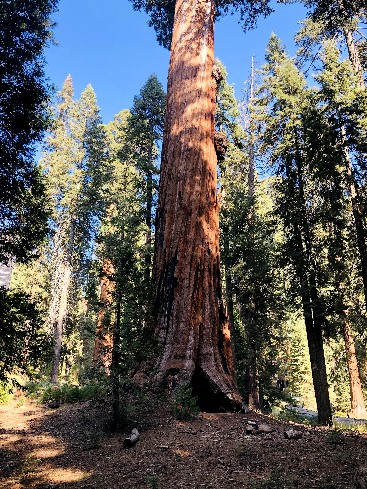
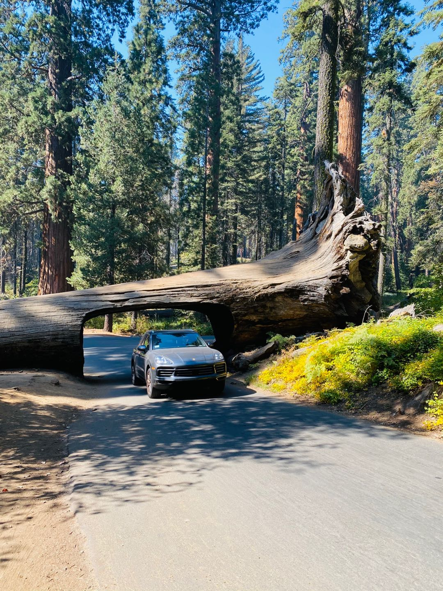

<!DOCTYPE html>
<html lang="en">
<head>
    <meta charset="utf-8">
    <meta http-equiv="X-UA-Compatible" content="IE=edge">
    <title>Eggwhite&amp;Yolk/photos/sequoia-2020-10-12/</title>
    
    <meta name="viewport" content="width=device-width, initial-scale=1">
    <meta name="robots" content="all,follow">
    <meta name="googlebot" content="index,follow,snippet,archive">
    <link rel="stylesheet" href="https://sayary.github.io/hugo-theme-console/css/terminal-0.7.1.min.css">
    <link rel="stylesheet" href="https://sayary.github.io/hugo-theme-console/css/console.css">
    
      <!--[if lt IE 9]>
          <script src="https://oss.maxcdn.com/html5shiv/3.7.2/html5shiv.min.js"></script>
          <script src="https://oss.maxcdn.com/respond/1.4.2/respond.min.js"></script>
      <![endif]-->
       <meta property="og:title" content="2020-10-12 Sequoia National Park, CA" />
<meta property="og:description" content="" />
<meta property="og:type" content="article" />
<meta property="og:url" content="https://sayary.github.io/photos/sequoia-2020-10-12/" />


  
<meta property="og:image" content="https://sayary.github.io/photos/sequoia-2020-10-12/sequoia_hu56eb6cede97d4ae6019c077289568a72_696420_400x0_resize_q75_box.jpg">

<meta property="article:published_time" content="2020-10-12T00:00:00+00:00" />


<meta name="twitter:card" content="summary_large_image"/>
<meta name="twitter:image" content="https://sayary.github.io/photos/sequoia-2020-10-12/sequoia_hu56eb6cede97d4ae6019c077289568a72_696420_400x0_resize_q75_box.jpg">


<meta name="twitter:title" content="2020-10-12 Sequoia National Park, CA"/>
<meta name="twitter:description" content="在长时间的Work from home之后决定休整几天，一家三口去了离LA车程3个半小时的Sequoia National Park. 除了车程较远以外感觉行程非常完美。一开始有担心女儿是否会因为车程过长而在路上崩溃吵闹，实践下来发现每2个小时休息一下对她来说就足够了。
我们租了一个三天两夜的Airbnb, 距离National Park的入口大概车程10分钟。吸引我们的地方在于后院有自己的楼梯可以直达一条潺潺的小溪，颇有一种“破产版”私人沙滩的感觉。女儿喜欢玩水，我们也乐得享受静谧隐私的一段假期。
由于疫情原因国家公园里的人不是很多，除了在最著名的景点之一Sherman Tree遇到了十几个游客，大部分的景点就只能遇到偶尔擦肩而过的一家人，大多也是带着小朋友来度假的。在这个特殊的年份，每个人都需要一点来之不易的时间，来跟大自然相处。"/>

<script type="application/javascript">
var doNotTrack = false;
if (!doNotTrack) {
	(function(i,s,o,g,r,a,m){i['GoogleAnalyticsObject']=r;i[r]=i[r]||function(){
	(i[r].q=i[r].q||[]).push(arguments)},i[r].l=1*new Date();a=s.createElement(o),
	m=s.getElementsByTagName(o)[0];a.async=1;a.src=g;m.parentNode.insertBefore(a,m)
	})(window,document,'script','https://www.google-analytics.com/analytics.js','ga');
	ga('create', 'UA-179840297-1', 'auto');
	
	ga('send', 'pageview');
}
</script>

</head>
<body class="terminal">
    <div class="container">
        <div class="terminal-nav">
          <header class="terminal-logo">
            <div class="logo terminal-prompt">
              
              
              <a href="https://sayary.github.io/" class="no-style site-name">Eggwhite&amp;Yolk</a>:~# 
              <a href='https://sayary.github.io/photos'>photos</a>/<a href='https://sayary.github.io/photos/sequoia-2020-10-12'>sequoia-2020-10-12</a>/</div></header>
          <nav class="terminal-menu">
            <ul vocab="https://schema.org/" typeof="BreadcrumbList">
                
                <li><a href="https://sayary.github.io/posts/" typeof="ListItem">Posts/</a></li>
                
                <li><a href="https://sayary.github.io/tags/" typeof="ListItem">Tags/</a></li>
                
                <li><a href="https://sayary.github.io/photos/" typeof="ListItem">Photos/</a></li>
                
                <li><a href="https://sayary.github.io/about/" typeof="ListItem">About/</a></li>
                
                <li><a href="https://sayary.github.io/index.xml" typeof="ListItem">RSS/</a></li>
                
            </ul>
          </nav>
        </div>
    </div>

    <div class="container animated zoomIn fast">
        
<h1>2020-10-12 Sequoia National Park, CA</h1>


    
    
        
        
    


<p>在长时间的Work from home之后决定休整几天，一家三口去了离LA车程3个半小时的Sequoia National Park. 除了车程较远以外感觉行程非常完美。一开始有担心女儿是否会因为车程过长而在路上崩溃吵闹，实践下来发现每2个小时休息一下对她来说就足够了。</p>
<p>我们租了一个三天两夜的Airbnb, 距离National Park的入口大概车程10分钟。吸引我们的地方在于后院有自己的楼梯可以直达一条潺潺的小溪，颇有一种“破产版”私人沙滩的感觉。女儿喜欢玩水，我们也乐得享受静谧隐私的一段假期。</p>
<p></p>
<p>由于疫情原因国家公园里的人不是很多，除了在最著名的景点之一Sherman Tree遇到了十几个游客，大部分的景点就只能遇到偶尔擦肩而过的一家人，大多也是带着小朋友来度假的。在这个特殊的年份，每个人都需要一点来之不易的时间，来跟大自然相处。</p>
<p></p>
<p></p>
<p></p>

<script src="https://utteranc.es/client.js"
        repo="Sayary/Sayary.github.io"
        issue-term="title"
        theme="github-light"
        crossorigin="anonymous"
        async>
</script>

        

<div class="footer">
    Powered by <a href="https://gohugo.io/">Hugo</a> with
    <a href="https://github.com/mrmierzejewski/hugo-theme-console/">Console Theme</a>. 
</div>

    </div>
  </body>
</html>
